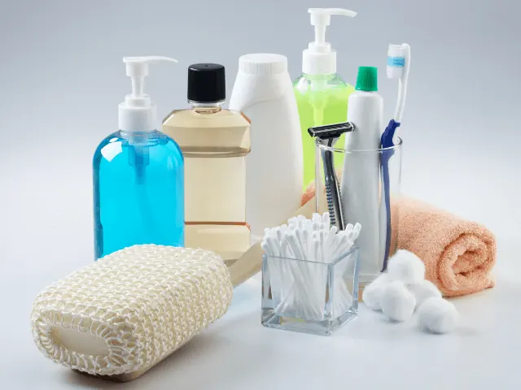
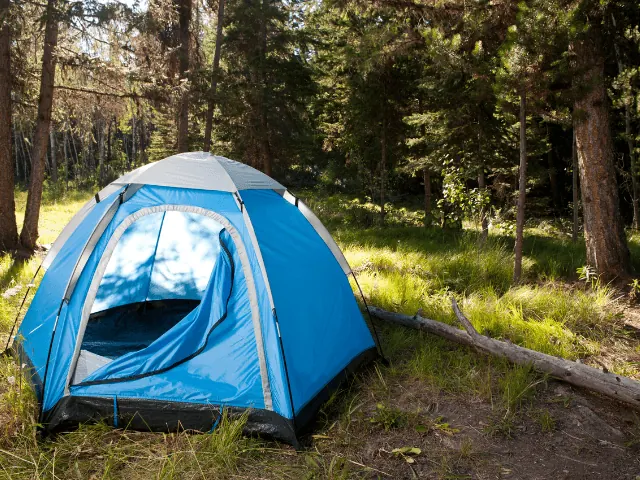
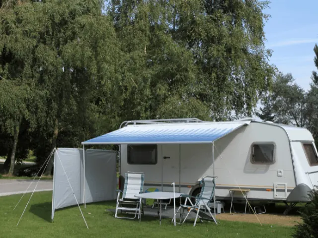

Inpaklijst Kamperen – Dit Mag je Niet Vergeten
Gepubliceerd op 24 januari 2023, bijgewerkt op 21 oktober 2023
Onderdeel van de gids Campings in Nijmegen

Kamperen is een favoriete bezigheid van veel Nederlanders. Zowel jong als oud vertoeven jaarlijks met plezier een weekje in hun tent of caravan, terwijl ze genieten van de heerlijke frisse buitenlucht. Er zijn in ons land dan ook veel verschillende campings te vinden. Van grote familiecampings tot kleine campings waar jij als gast volledig tot rust kunt komen, er is voor iedereen wel een passende camping te vinden. Maar wat neem je mee wanneer je gaat kamperen?
Persoonlijke documenten zoals identiteitsbewijs, bankpas, zorgpas en rijbewijs mogen natuurlijk niet ontbreken. Ook toiletartikelen zoals tandenborstels en medicijnen zijn enorm belangrijk. Daarnaast zijn voldoende kleding en opladers van je elektronische apparaten ook geen overbodige luxe. En wat dacht je van een tent en alle bijbehorende slaapartikelen? Zonder comfortabele slaapplek wordt het immers moeilijk kamperen.
Benieuwd naar de complete checklist voor een weekje kamperen? Dan ben je bij ons aan het juiste adres. In het onderstaande artikel vertellen we jou namelijk precies wat je mee moet nemen. De items op onze checklist dien je te allen tijde bij je te hebben. Op deze manier kun je er zeker van zijn dat jij goed voorbereid aan het avontuur begint. We beginnen dit artikel met een algemene lijst die iedere vakantieganger kan gebruiken, en vervolgens duiken we dieper in op de specifieke paklijsten voor het kamperen in de tent of caravan.
Paklijst kamperen – Wat heb je nodig?
Of je nu gaat kamperen in een tent of dat je de caravan meeneemt, er zijn bepaalde zaken die je onder geen beding mag vergeten. Je wilt immers wel goed beslagen ten ijs komen. Onderstaand bespreken we enkele categorieën met een bijbehorende checklist van spullen die jij niet mag vergeten.
Persoonlijke documenten
Het maakt niet uit of je binnen Nederland blijft of naar het buitenland reist, het is wat ons betreft altijd belangrijk om je persoonlijke documenten mee op reis te nemen. Waar moet je dan zoal aan denken? Onderstaand een handige checklist.
- Paspoort/ID-kaart
- Rijbewijs
- Kentekenbewijs
- Zorgpas
- Documenten reisverzekering
- Bankpas
- Creditcard
- Eventuele milieustickers/vignet
Wanneer je al deze documenten bij je hebt, kun je met een gerust hart gaan kamperen. Jij komt in ieder geval niet voor verrassingen te staan!

Toiletartikelen
Zowel mannen als vrouwen gebruiken dagelijks diverse verzorgingsproducten. Deze wil je ook tijdens het kamperen natuurlijk bij je hebben. Onderstaand een checklist van toiletartikelen die hoe dan ook ingepakt moeten worden.
- Tandenborstel + tandpasta
- Medicijnen
- Verbanddoos
- Haarverzorgingsproducten (shampoo/haarlak/gel)
- Haaraccessoires (borstel/kam/elastiekjes)
- Douchegel
- Make-up
- Deo
- Scheerapparaat
- Parfum
- Zonnebrandcrème
- Nagelschaar
- Wc-papier
De ene vakantieganger zal meer van deze producten nodig hebben dan de ander. Toch zijn dit over het algemeen producten die iedereen dagelijks wel gebruikt.
Persoonlijke spullen
Tot slot is het natuurlijk ook belangrijk om je persoonlijke spullen niet te vergeten. Wat verstaan we hier precies onder? Laten we eens gaan kijken naar de onderstaande checklist.
- Kleding (incl. ondergoed, sokken, schoenen)
- Zwemkleding
- Sportkleding
- Zonnebril
- Badlaken
- Opladers elektronische apparaten
- Portemonnee
- Zaklamp
- Waterfles
- Batterijen
Diverse soorten kleding zijn absoluut belangrijk wanneer je gaat kamperen. Je weet immers nooit zeker wat voor weer het wordt, en je wilt natuurlijk overal zo goed mogelijk op voorbereid zijn. Met de bovenstaande checklist gaat dat zeker lukken!

Checklist kamperen in een tent
Ben jij een fanatiek kampeerder, en slaap je het liefst in een tent? Dan is deze checklist voor jou. Wij vertellen je precies welke items niet mogen ontbreken wanneer je inpakt voor een kampeervakantie met de tent.
- Tent (incl. frame/tentstokken)
- Haringen
- Pomp
- Hamer
- Duct tape
- Grondzeil
- Luchtbed
- Dekbed/slaapzak
- Kussen
- Tafel
- Stoelen
- Wereldstekker
- Waslijn
- Parasol
- Koelbox
- Jerrycan
Sommige items op deze lijst zullen wellicht niet relevant zijn voor jou. Je hebt immers geen tentstokken nodig wanneer je een volledig opblaasbare tent hebt. Toch is het gros van de items op deze lijst zeer nuttig tijdens het kamperen.
Er moet natuurlijk ook gegeten worden op de camping. Het is dan ook handig om keukengerei mee te nemen. Alhoewel de benodigde tools zullen afhangen van jouw persoonlijke wensen, hebben we hieronder een lijstje opgesteld met de belangrijkste zaken.
- Afwas spulletjes
- Bekers
- Bestek
- Borden
- Pannen
- Koffiezetapparaat
- Waterkoker
- Maatbeker
- Spatel
- Theedoeken
- Vuilniszakken
- Kruiden
- Kooktoestel
- Lucifers
- Snijplank
- Schaar
Naast het inpakken van keukengerei, moeten er natuurlijk ook boodschappen worden gedaan. Zorg hierbij dat je in ieder geval de belangrijkste producten in huis haalt. Denk bijvoorbeeld aan thee, koffie, suiker, brood, boter, beleg en diverse éénpansgerechten.

Checklist kamperen met een caravan
Sommige mensen vinden het slapen in een tentje toch net een stap te ver, en vertoeven liever in een caravan. Hoor jij ook bij deze groep mensen? Dan ben je ongetwijfeld benieuwd wat je allemaal moet inpakken voor een kampeervakantie met de caravan. Onderstaand de belangrijkste items.
- Voortent
- Reservesleutel caravan/auto
- Bijzet tent
- Luifel
- Gasflessen
- Reserve verlichting
- Wielklem
- Grondzeil
- CAI kabel
- Kabelhaspel
- Aardlekschakelaar
- Hulpspiegels auto
- Krik
- Campingstekker
Al deze items zijn relevant wanneer je met de caravan op vakantie gaat. Echter raden wij je ook aan om de eerdere checklist voor reizigers met de tent door te lezen. In deze lijst staan namelijk ook diverse items die kampeerders met de caravan zonder twijfel nodig zullen hebben. Je doet er goed aan om alle checklists in dit artikel grondig door te nemen, zodat jij goed voorbereid op pad gaat wanneer je gaat overnachten in Nijmegen.